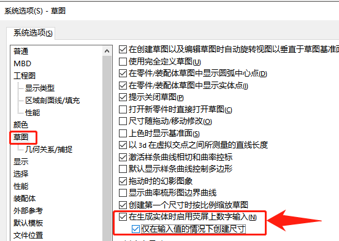
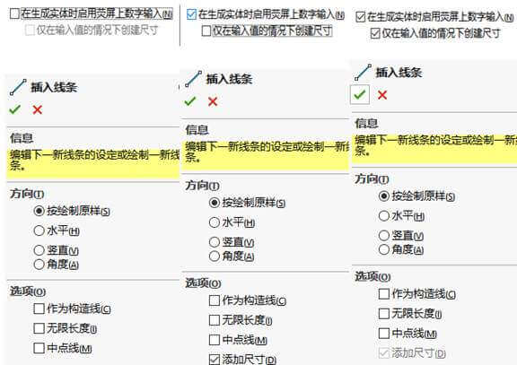
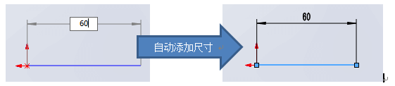
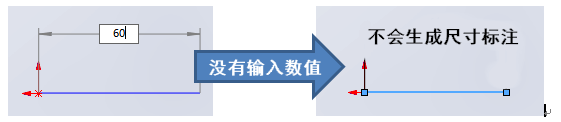
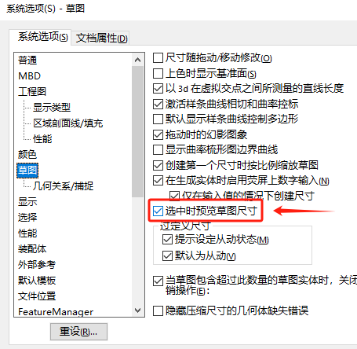
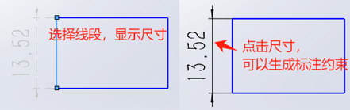
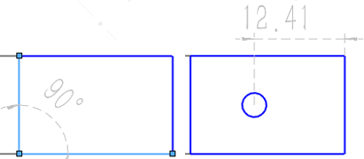

草图标注技巧
默认情况下，我们在标注草图尺寸时会需要选择【草图-智能尺寸】的方式，再选择草图线段进行尺寸标注。而本文章将介绍一种草图标注的技巧方法及2024草图标注的新功能。提高我们草图标注的效率。
提示添加尺寸输入
勾选【系统选项-草图-在生成实体时启用荧屏上数字输入】，那么在绘制草图的同时输入尺寸值，仅在输入值的情况下创建尺寸（该选项会顺便生成尺寸标注）
下面是设置前后，在绘制草图时的编辑页。其中“选项”中就会多一项“添加尺寸”的可选项。
在你绘制草图实体的同时，输入尺寸数值。则这个尺寸也会自动添加。
但是，这里也有一个需要说明的。当我们不知该尺寸数值而跳过输入时，草图线段就不会生成尺寸标注，这又回到了最初使用【智能尺寸】命令的标注操作。
选中时预览草图尺寸
针对前面的标注情况，在2024新功能中，增加了“选中时预览草图尺寸”功能。在【系统选项-草图-选中时预览草图尺寸】可以将其勾选启用。
开启该功能后，你可以在选中草图线段时，显示线段的尺寸，并且通过点击尺寸，可以将预览尺寸自动变成具有约束作用的尺寸标注
除此之外，预览尺寸还支持你进行多选操作，针对多选的对象关系，软件会智能的判断你想要的尺寸约束显示。例如：两直线形成的夹角关系，圆和直线的距离关系等….
